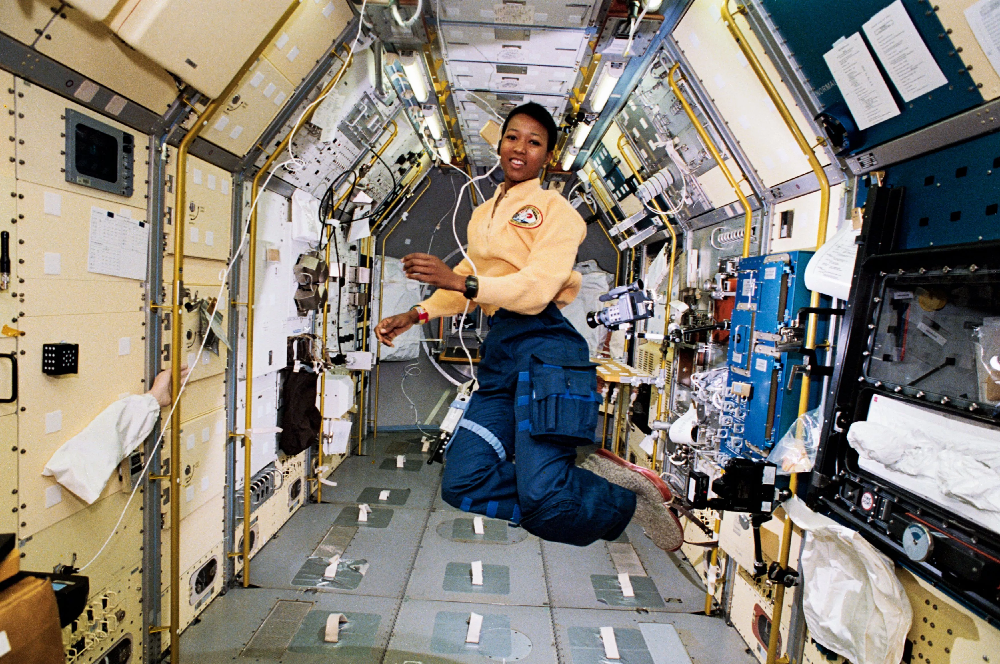
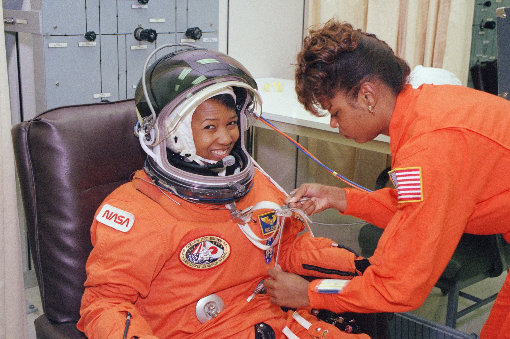
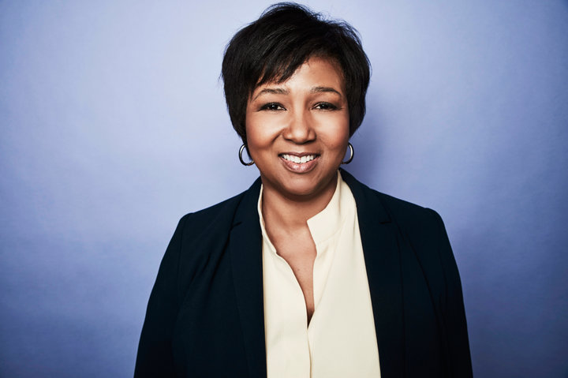
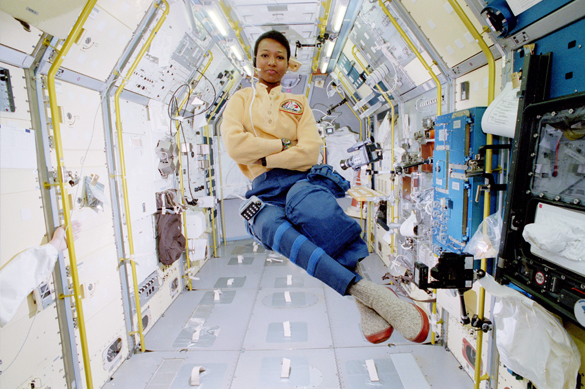
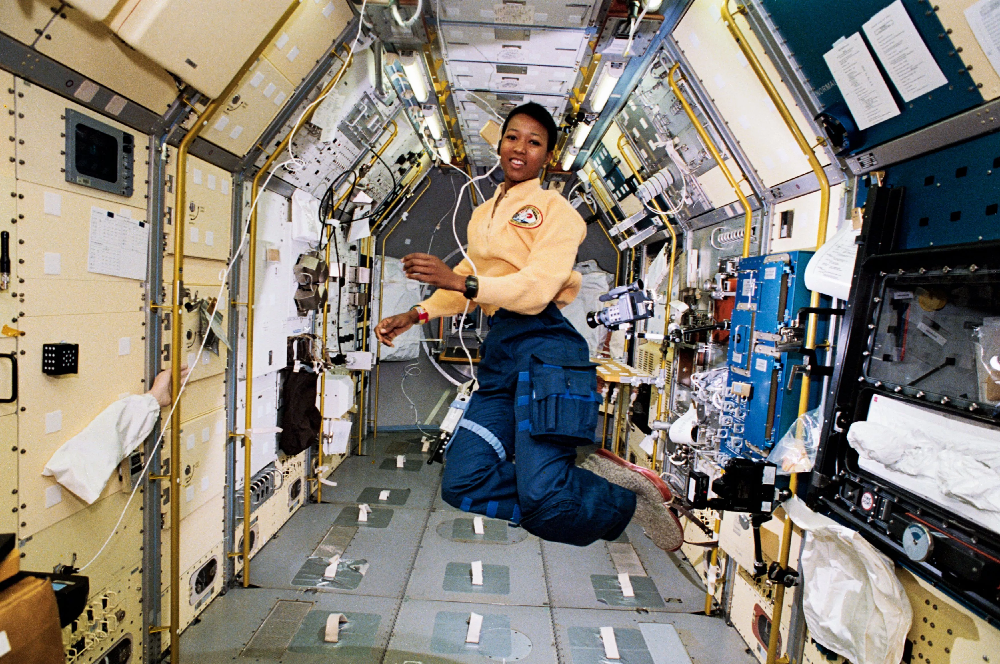
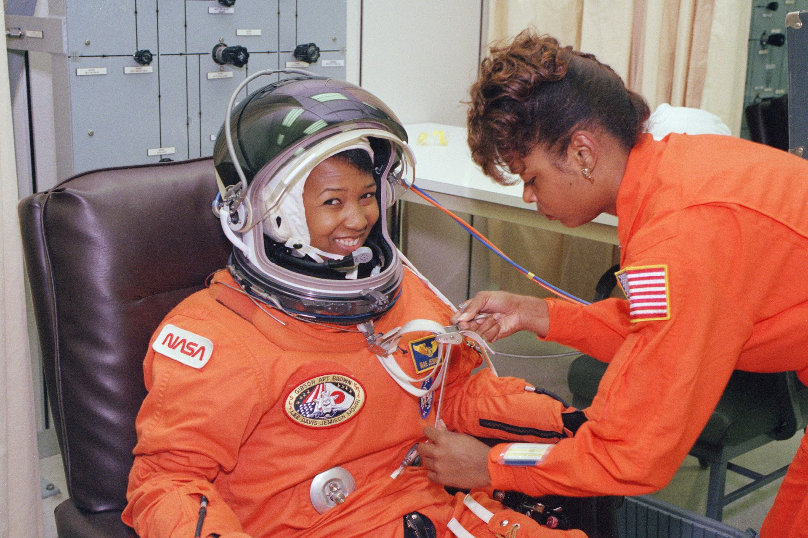
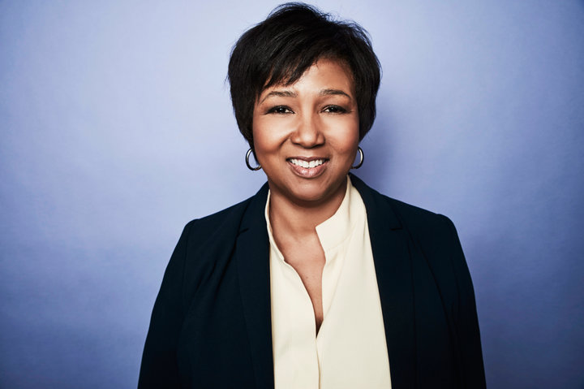
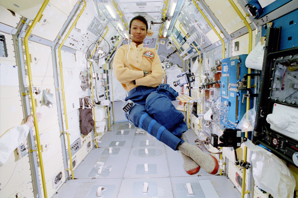

Mae Jemison
Mae Jemison é uma ex-astronauta americana, médica e engenheira. Ela ficou conhecida por ser a primeira mulher negra a viajar para o espaço, quando atuou como especialista de missão a bordo do ônibus espacial Endeavour.
Jemison se juntou ao grupo de astronautas da NASA em 1987 e serviu na missão STS-47, durante a qual orbitou a Terra de 12 a 20 de setembro de 1992.
• Biografia
Mae Carol Jemison nasceu em 17 de outubro de 1956 em Decatur, Alabama e era a caçula de três filhos de Charles Jemison e Dorothy Jemison. O pai Jemison trabalhou como supervisor de manutenção em uma organização de caridade, enquanto sua mãe era professora de inglês e matemática em uma escola primária em Chicago. Ela cresceu em Chicago e sempre sonhou em estudar ciência e ir para o espaço.
O programa de TV Star Trek e a atriz negra Nichelle Nichols, que interpretava a Tenente Uhura, foram uma grande inspiração. Jemison também era apaixonada por dança e estudou vários estilos, incluindo dança africana e japonesa, ballet, jazz e dança contemporânea.
Depois de concluir o ensino médio, em 1973, ela entrou na Stanford University aos dezesseis anos, onde enfrentou discriminação dos professores. Durante uma entrevista, Jemison relatou que ingressar na faculdade tão jovem foi desafiador, mas sua autoconfiança juvenil foi útil. Ela acrescentou que, em uma sociedade dominada por homens brancos, ter uma certa dose de confiança é importante para mulheres e minorias alcançarem sucesso.
Jemison foi líder do coletivo negro e se formou em engenharia química e estudos africanos. Ela se tornou médica em 1981, mas decidiu tentar a NASA e finalmente conseguiu entrar em 1987.
• Principais contribuições para ciência
A Dra. Jemison é uma cientista americana que fez importantes contribuições em várias áreas científicas, principalmente na promoção da educação científica e da diversidade na ciência. As principais contribuições são:
1. Missão espacial da NASA
Em 1992, como membro da tripulação do ônibus espacial Endeavour, a Dra. Mae Jemison fez história ao se tornar a primeira astronauta negra a viajar para o espaço. Durante sua missão, ela conduziu experimentos médicos e científicos e trabalhou em um projeto de imagens da Terra.
2. Pesquisa biomédica
Por ser médica treinada em tecnologia médica e ambiental e ter trabalhado como médica de emergência antes de se tornar astronauta. Jemison fundou a Jemison Group, uma empresa de pesquisa e desenvolvimento que se concentra em tecnologia médica e ambiental.
3. Promoção da educação científica
A Dra. Mae Jemison é uma defensora entusiasta da educação científica e criou a The Earth We Share, uma organização sem fins lucrativos que proporciona programas de educação científica para estudantes de escolas públicas em todo o mundo.
4. Diversidade na ciência
A Dra. Mae tem sido uma defensora da diversidade na ciência e tem trabalhado para promover a inclusão de mulheres e negros na ciência. Ela é membro fundador do 100 Year Starship, um projeto que visa tornar viável uma viagem interestelar dentro de um século, e tem se concentrado em incentivar a participação de grupos sub-representados na ciência.


 






